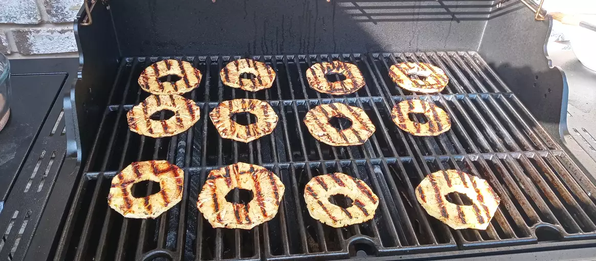

Grilled Pineapple Slices

Dish Description
Grilled cinnamon sweet pineapple rings! You can't eat just one ring!
Ingredients
- 1 fresh pineapple - peeled, cored and cut into rings
- 1/4 cup canned coconut milk
- 1/2 cup cinnamon suger
Steps
- Preheat a grill to medium heat. When the grill is hot, lightly oil the grate.
- Place the coconut milk and cinnamon sugar into separate dishes. Dip slices of pineapple into cocount milk, then coat in cinnamon sugar.
- Grill slices for six minutes on each side. Remove to plates and serve.